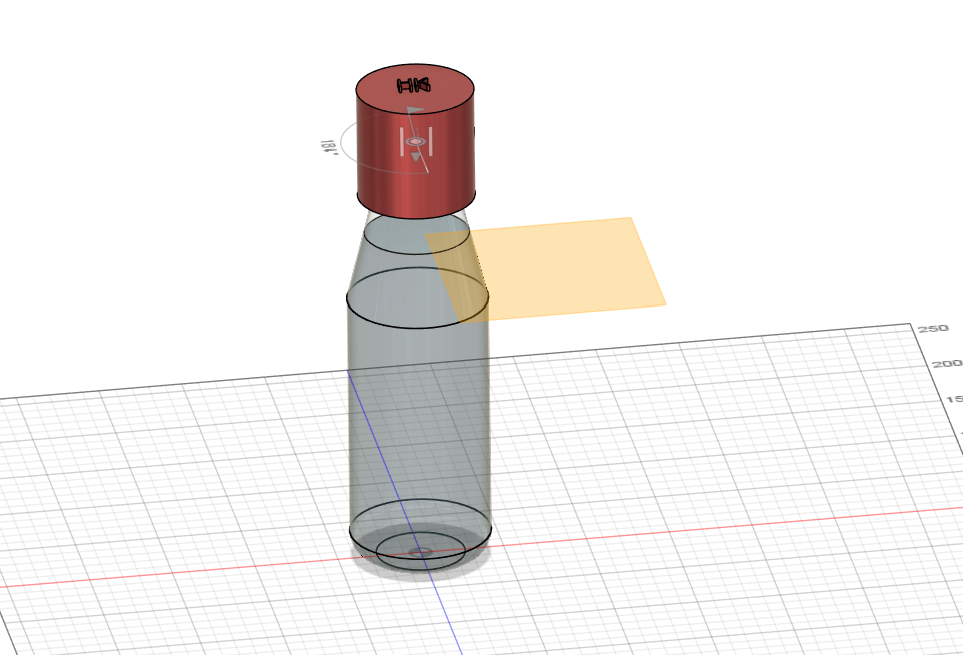
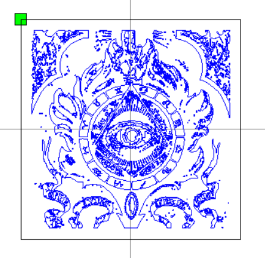
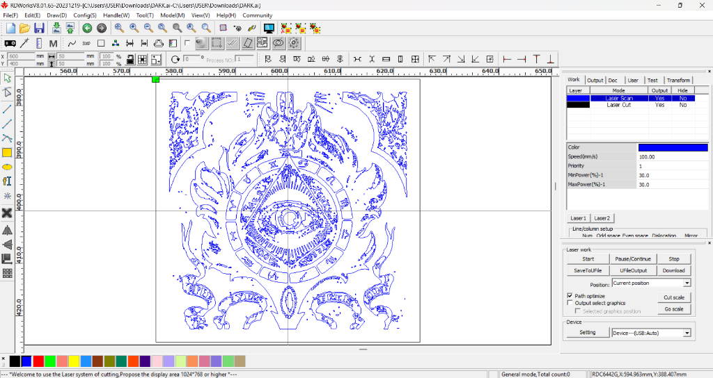
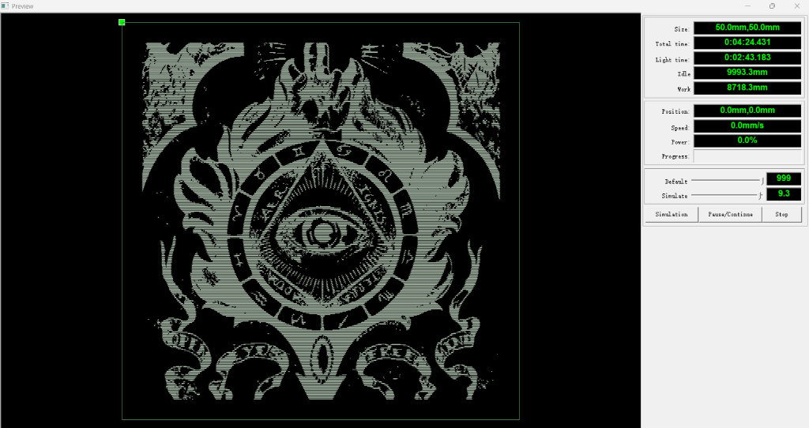
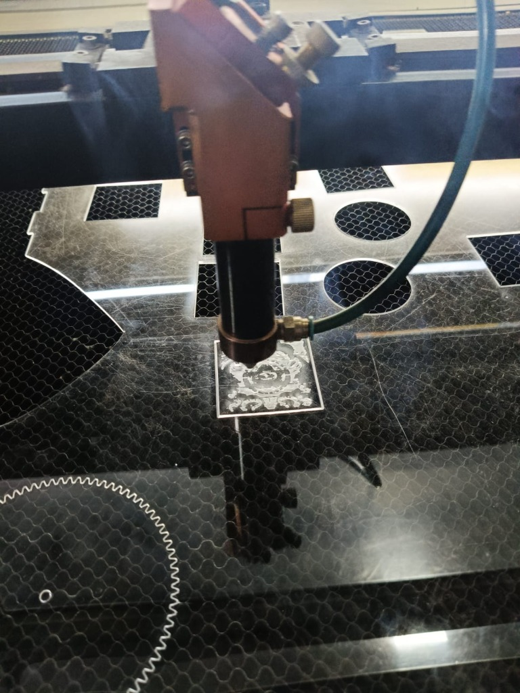
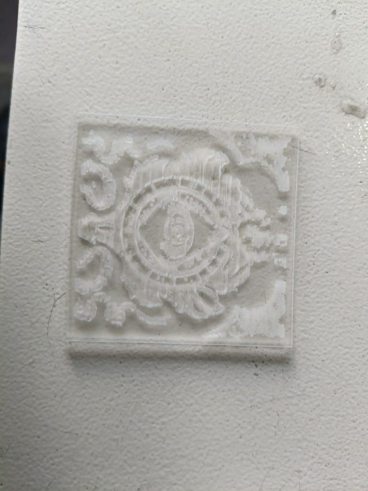

Designing, Making & Finding My Team
Overview
Week 4 was a combination of practical engineering activities and an important team-selection experience. On the technical side, I continued my Autodesk Fusion 360 learning by working on a 3D water bottle model and was introduced to digital fabrication through laser cutting. Using RDWorks V8, I prepared a digital alloy wheel design and cut it onto a 2 mm transparent acrylic sheet with approximate dimensions of 50 mm × 50 mm.
Alongside these practical activities, the ProtoSem Marketplace and visionary selection process took place. I participated with the hope of becoming a visionary, but I was not selected. Although disappointing at first, handling the rejection helped me adapt and understand that leadership and teamwork take many forms.
Following team formation, I joined a team working on the problem statement: Non-invasive methane monitoring for cattle and livestock. Within the team, I took on the role of Hustler, taking initiative to support team coordination, communication, and overall progress.
Objectives
- Improve Fusion 360 modelling skills.
- Practice building a water bottle model in Fusion 360.
- Understand the basic laser-cutting workflow.
- Gain practical experience with RDWorks V8 and digital fabrication.
- Understand teamwork, role allocation, and problem-statement selection.
Activities
Fusion 360 – Water Bottle Building
During Week 4, I continued my CAD learning by working on a water bottle model in Autodesk Fusion 360. Building the bottle model gave me practical experience using key 3D modelling tools and helped me better understand CAD workflows. I focused on understanding exact dimensions, shapes, and curves to create a clean geometry. Practicing this exercise helped improve my dimensional accuracy and overall confidence in CAD modelling.
Laser Cutting
I was also introduced to digital fabrication and learned the fundamentals of laser cutting. For this activity, I prepared a digital alloy wheel design and used RDWorks V8 to configure the parameters for the laser-cutting machine. The design was cut onto a 2 mm transparent acrylic sheet, resulting in a physical piece with approximate dimensions of 50 mm × 50 mm. This activity clearly demonstrated the connection between turning a digital 2D vector design into a physically manufactured object.
Visionary Selection
I participated in the ProtoSem visionary selection process with the intention of becoming a visionary leader. However, after the pitches and evaluation, I was not selected. Participating taught me that not every attempt results in selection, but the experience itself improved my communication and adaptability. Handling rejection constructively reminded me that teamwork requires diverse contributions and that every role is vital to project success.
Team Formation & Problem Statement
After the visionary selection concluded, team formation was finalized. I joined a team that selected and was assigned the problem statement: Non-invasive methane monitoring for cattle and livestock. This real-world challenge in agricultural and environmental monitoring will be the focus of our team's upcoming ProtoSem work.
Team Role — Hustler
My role in the team is Hustler. In this role, I focus on taking initiative, keeping communication clear, assisting with team coordination, and helping move our team forward as we begin working on our problem statement.
Skills Learned
Concepts Learned
Key Learnings
- Improved my Fusion 360 skills through water bottle modelling.
- Learned the basic workflow of preparing a design for laser cutting.
- Gained hands-on experience with RDWorks V8 and acrylic cutting.
- Learned that rejection can be part of the learning process.
- Joined a team working on non-invasive methane monitoring for cattle and livestock and took the role of Hustler.
Reflection
Week 4 showed me that learning in ProtoSem happens both at the workbench and through teamwork experiences. Building the water bottle model in Fusion 360 and laser cutting an alloy wheel design on acrylic gave me a practical understanding of digital fabrication. At the same time, participating in the visionary selection process was a lesson in self-reflection.
Although I wanted to become a visionary, not being selected was not an end point. Instead, becoming part of a team working on non-invasive methane monitoring for cattle and livestock gave me a fresh opportunity to contribute in a meaningful way. Embracing the role of Hustler lets me bring energy, initiative, and coordination to help our team succeed.
Event Gallery

Autodesk Fusion 360 – Water Bottle 3D CAD Model

Vector Graphic & Emblem Design for Laser Fabrication

RDWorks V8 – Laser Scan & Cut Configuration (50 mm × 50 mm)

RDWorks V8 – Laser Engraving Simulation Preview

Laser Engraving & Cutting on 2 mm Acrylic Sheet

Final Laser Engraved Acrylic Piece (50 mm × 50 mm)